HeatmapR reads single-cell data where it lives:
SingleCellExperiment and SummarizedExperiment
objects, Seurat objects, flowFrame and
flowSet objects, AnnData (.h5ad) files, and
sparse matrices, in memory or on disk (DelayedArray, HDF5Array and
BPCells), as well as matrices and data frames. Features are chosen by
name, groups and annotations come from the cells’ metadata, and only the
chosen features of the cells shown are ever made dense, so a few markers
of a million cells need little memory. Five arguments do most of the
work, in heat_map(), heat_map_summarise() and
heat_map_dot():
| Argument | What it does |
|---|---|
features |
the genes, proteins or markers to show, by name (or a named list of groups of them) |
assay |
which values: an assay of a SingleCellExperiment, an
assay or layer of a Seurat object |
group_by |
a metadata column (or vector) grouping the cells, e.g. clusters or cell types; several columns for their combinations, e.g. cell type and condition |
group_max |
the most cells to show from each group, so small groups stay visible |
annotation_by |
metadata columns drawn as annotation tracks |
Cells are rows and features columns, as in scanpy and cytometry data;
swap_axes = TRUE gives Seurat’s genes-as-rows layout.
Example data
A simulated experiment from heat_map_example(): 3,000
peripheral blood cells of six types from four donors in two conditions,
with 2,000 genes, four of them markers of each cell type. As a
SingleCellExperiment, the counts and log-normalised counts
(logcounts) are sparse matrices with genes as rows and
cells as columns, the cells’ metadata is in colData() and
the markers of each type are in metadata().
heat_map_example() without class gives the
same cells as a data frame, one row per cell, which every function here
reads too.
library(SingleCellExperiment)
sce <- heat_map_example("rna", class = "SingleCellExperiment")
sce
#> class: SingleCellExperiment
#> dim: 2000 3000
#> metadata(1): markers
#> assays(2): counts logcounts
#> rownames(2000): CD3E IL7R ... Gene1999 Gene2000
#> rowData names(0):
#> colnames(3000): cell1 cell2 ... cell2999 cell3000
#> colData names(3): cell_type sample condition
#> reducedDimNames(0):
#> mainExpName: NULL
#> altExpNames(0):
markers <- metadata(sce)$markers
markers
#> $`CD4 T`
#> [1] "CD3E" "IL7R" "CCR7" "LDHB"
#>
#> $`CD8 T`
#> [1] "CD8A" "CD8B" "GZMK" "CCL5"
#>
#> $B
#> [1] "MS4A1" "CD79A" "CD79B" "BANK1"
#>
#> $NK
#> [1] "GNLY" "NKG7" "PRF1" "GZMB"
#>
#> $`CD14 Mono`
#> [1] "CD14" "LYZ" "S100A8" "S100A9"
#>
#> $DC
#> [1] "FCER1A" "CST3" "CLEC10A" "CD1C"
head(colData(sce))
#> DataFrame with 6 rows and 3 columns
#> cell_type sample condition
#> <factor> <character> <character>
#> cell1 CD4 T donor3 treated
#> cell2 CD14 Mono donor2 control
#> cell3 CD8 T donor4 treated
#> cell4 NK donor4 treated
#> cell5 CD4 T donor3 treated
#> cell6 NK donor2 controlA heatmap of cells
features chooses the genes (matched to row names, or to
gene symbols in rowData() when the row names are IDs),
group_by groups the cells by a column of
colData(), and the groups are separated and labelled in the
order of their levels. logcounts is used by default (then
"exprs", then the first assay).
heat_map(
sce,
features = unlist(markers),
group_by = "cell_type",
axis_text_y = NA,
title = "Marker genes in 3,000 cells"
)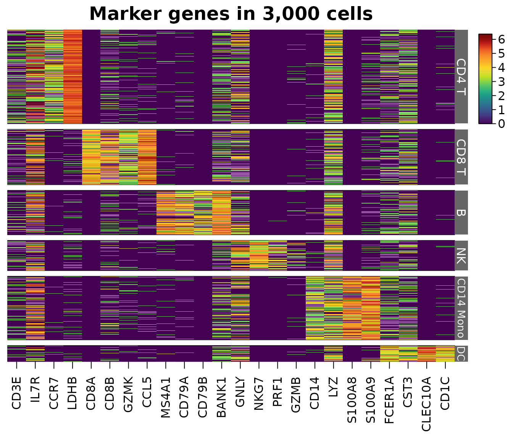
Only the 24 chosen genes of the cells shown are read from the sparse matrix, in compiled code; the other 1,976 genes are never touched. A missing feature is an error that names it, and a message warns when the dense values would take more than 1 GB.
Downsampling and annotations
Large groups crowd out small ones. group_max keeps at
most that many cells of each group, drawn with a fixed seed by
heat_map_downsample(), and every cell of smaller groups.
annotation_by draws metadata columns as tracks beside the
cells.
heat_map(
sce,
features = unlist(markers),
group_by = "cell_type",
group_max = 100,
annotation_by = c("sample", "condition"),
axis_text_y = NA,
title = "At most 100 cells of each type"
)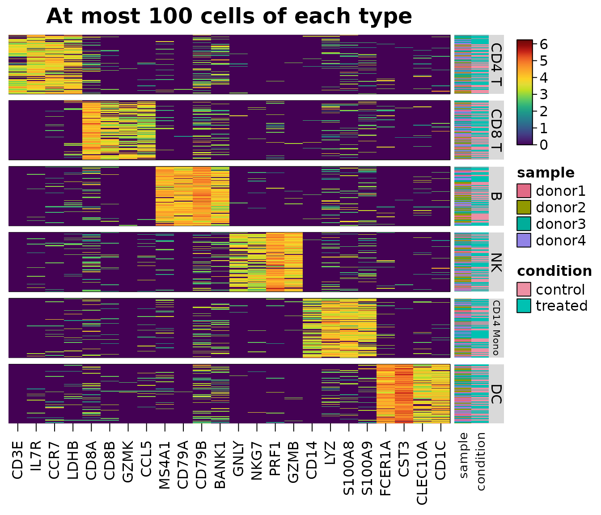
keep <- heat_map_downsample(sce$cell_type, n = 100)
table(sce$cell_type[keep])
#>
#> CD4 T CD8 T B NK CD14 Mono DC
#> 100 100 100 100 100 100Genes as rows
swap_axes = TRUE draws genes as rows and cells as
columns, as Seurat’s DoHeatmap() does, with the groups and
annotations along the top. A named list of features groups the genes
too.
heat_map(
sce,
features = markers,
group_by = "cell_type",
group_max = 100,
swap_axes = TRUE,
axis_text_x = NA,
title = "Genes as rows"
)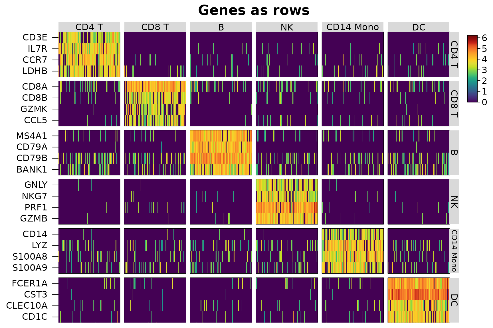
Seurat objects
A Seurat object is read the same way, from its default
assay’s "data" layer (or the assay or layer given to
assay, e.g. "counts",
"scale.data" or c("ADT", "data")), with groups
and annotations from meta.data.
library(SeuratObject)
seu <- suppressWarnings(CreateSeuratObject(
counts = counts(sce),
meta.data = as.data.frame(colData(sce))
))
seu <- SetAssayData(seu, layer = "data", new.data = logcounts(sce))
heat_map(
seu,
features = markers,
group_by = "cell_type",
group_max = 100,
swap_axes = TRUE,
axis_text_x = NA,
title = "From a Seurat object"
)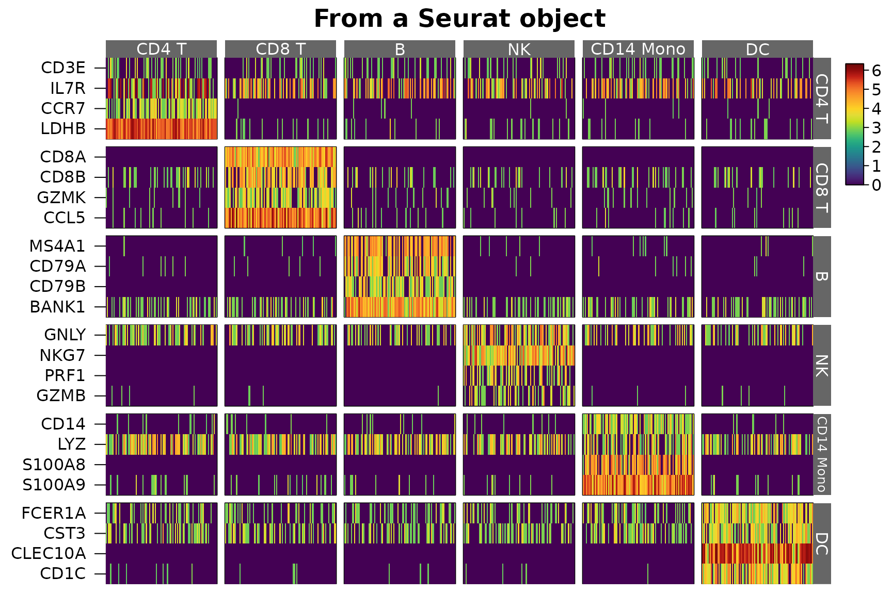
AnnData files
AnnData (.h5ad) files written by scanpy and anndata, or
downloaded from CELLxGENE, are read by heat_map_read_h5ad()
without Python, through the hdf5r package. The metadata of the cells
(obs) is read at once, so group_by and
annotation_by name its columns; X, a layer
(assay = "counts") or raw is read as a sparse
matrix the first time it is used and kept for the next heatmap. Features
are named by the index of var or by a column of symbols or
IDs, such as CELLxGENE’s feature_name. A small file of 60
cells of three types comes with the package:
file <- system.file("extdata", "example.h5ad", package = "HeatmapR")
cells <- heat_map_read_h5ad(file)
cells
#> AnnData file example.h5ad: 60 cells x 30 features
#> assays: X, counts, raw
#> obs: cell_type, sample, n_counts, is_doublet, barcode, n_genes
heat_map_dot(cells, features = paste0("GENE", 1:8), group_by = "cell_type",
title = "From an AnnData file")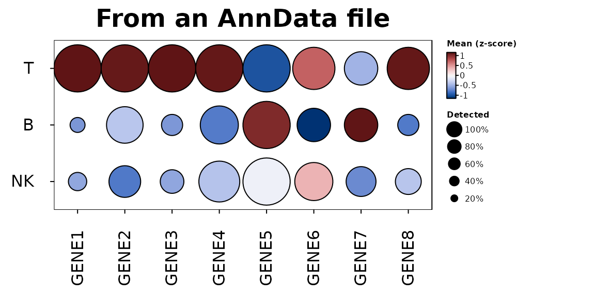
On-disk data
Assays too large for memory can stay on disk. A
SingleCellExperiment whose assays are
DelayedArray objects - e.g. written with HDF5Array’s
writeHDF5Array() or writeTENxMatrix(), or
loaded with HDF5Array::loadHDF5SummarizedExperiment() - and
a Seurat object whose layers are BPCells matrices are read
like those in memory: heatmaps and dot plots read only the chosen
features of the cells shown, and summaries, markers and scores of every
gene read the data a block of genes at a time, each block realised as a
sparse (or dense) matrix and passed to the same compiled code, so the
results are the same as those of the data in memory. (A
DelayedArray that only wraps a matrix in memory is read as
that matrix.) Here the logs of the counts are left as a delayed
operation, which is read in blocks like data on disk:
disk <- sce
assay(disk, "log1p") <- log1p(DelayedArray::DelayedArray(counts(sce)))
class(assay(disk, "log1p"))
#> [1] "DelayedMatrix"
#> attr(,"package")
#> [1] "DelayedArray"
memory <- sce
assay(memory, "log1p") <- log1p(counts(sce))
all.equal(
heat_map_markers(disk, group_by = "cell_type", assay = "log1p"),
heat_map_markers(memory, group_by = "cell_type", assay = "log1p")
)
#> [1] TRUE
# AN HDF5-BACKED OBJECT, SAVED ONCE AND LOADED WITHOUT READING THE COUNTS
HDF5Array::saveHDF5SummarizedExperiment(sce, "pbmc_h5")
disk <- HDF5Array::loadHDF5SummarizedExperiment("pbmc_h5")
heat_map_summarise(disk, group_by = "cell_type")A block holds 2^24 values of all the cells (128 MB as a dense matrix)
or eight times as many values of sparse data;
options(HeatmapR.block_values = ) sets the size.
Summaries of groups
heat_map_summarise() reduces the cells of each group to
one row: the mean, median, sum, number or proportion detected, or any
function, of each feature. For sparse data the mean, sum, number,
proportion detected and median are found from the non-zero values in
compiled code, without a dense copy of the data, and equal those of the
dense data exactly.
means <- heat_map_summarise(sce, features = unlist(markers), group_by = "cell_type")
dense <- heat_map_summarise(
as.matrix(Matrix::t(logcounts(sce)[unlist(markers), ])),
group_y = sce$cell_type
)
# THE SAME NUMBERS ([, ] DROPS THE NUMBER OF CELLS IN EACH GROUP, WHICH THE
# SUMMARY OF group_by ALSO KEEPS)
identical(means[, ], dense)
#> [1] TRUE
heat_map(means, scale = "column", tree = "both",
title = "Mean expression of each cell type")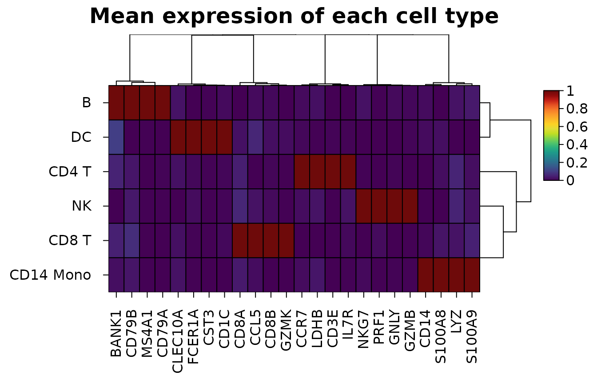
Composition of samples
heat_map_composition() counts the cells of each group in
each sample and draws the share of each sample’s cells in each group,
with the samples clustered by their make-up, annotated by their metadata
and with their numbers of cells beside them. Only the metadata of the
cells is read. Shares add up to one in each sample, so
values = "clr" draws centred log-ratios instead (Aitchison
1982), which compare compositions without one group’s growth shrinking
the others:
heat_map_composition(sce, group_by = "cell_type", sample_by = "sample",
annotation_by = "condition",
title = "Cell types in each donor")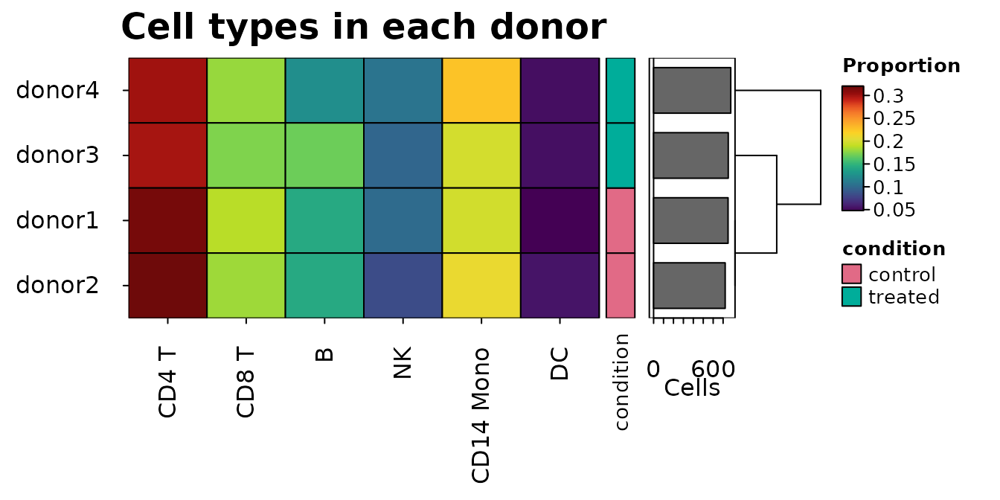
Markers
heat_map_markers() scores every feature in every group
by its AUC against all the other cells: the chance that a cell of the
group has the larger value, ties counting half (the Wilcoxon rank-sum
statistic, Wilcoxon 1945 and Mann and Whitney 1947, over the product of
the numbers of cells, as presto’s wilcoxauc() scores
markers; Korsunsky et al. 2019). Features are kept for a group when they
are detected in at least min_detected (0.1) of its cells
and their mean is at least min_logfc (0.25) above the other
cells’; each feature marks the group where its AUC is highest, and the
top n of each group are flagged in the top
column. Only features that pass the filters are ranked, and the zeros of
sparse data share one rank, so only the non-zero values are sorted. Each
AUC comes with the p-value of the Wilcoxon rank-sum test
(p_value, as wilcox.test(exact = FALSE) finds
it) and its false discovery rate within the group (p_adj,
by the method of Benjamini and Hochberg 1995, adjusted over every gene
scored). With thousands of cells nearly every marker has a tiny p-value,
so the AUC and the difference of the means say more about how well a
gene marks a group.
m <- heat_map_markers(sce, group_by = "cell_type", n = 3)
head(m[m$top, ], 8)
#> group feature auc logfc p_value p_adj mean_in
#> 1 CD4 T CCR7 0.9362311 3.171797 0.000000e+00 0.000000e+00 3.429567
#> 2 CD4 T IL7R 0.9280266 3.124902 0.000000e+00 0.000000e+00 3.296346
#> 3 CD4 T LDHB 0.9143694 2.901918 0.000000e+00 0.000000e+00 3.190240
#> 5 CD8 T CD8A 0.9669296 3.376582 0.000000e+00 0.000000e+00 4.031178
#> 6 CD8 T CD8B 0.8962607 2.703851 0.000000e+00 0.000000e+00 2.952239
#> 7 CD8 T GZMK 0.8665903 2.498931 0.000000e+00 0.000000e+00 2.509124
#> 9 B CD79B 0.9856562 3.566536 1.563884e-293 1.042589e-290 4.458818
#> 10 B MS4A1 0.9726375 3.710441 0.000000e+00 0.000000e+00 3.999230
#> mean_out detected_in detected_out top
#> 1 0.25777017 0.8924731 0.094685990 TRUE
#> 2 0.17144413 0.8720430 0.061835749 TRUE
#> 3 0.28832155 0.8612903 0.102415459 TRUE
#> 5 0.65459584 0.9579525 0.229922544 TRUE
#> 6 0.24838792 0.8244973 0.090909091 TRUE
#> 7 0.01019257 0.7349177 0.003668977 TRUE
#> 9 0.89228187 0.9863014 0.305620609 TRUE
#> 10 0.28878882 0.9543379 0.105776737 TRUE
attr(m, "features")
#> $`CD4 T`
#> [1] "CCR7" "IL7R" "LDHB"
#>
#> $`CD8 T`
#> [1] "CD8A" "CD8B" "GZMK"
#>
#> $B
#> [1] "CD79B" "MS4A1" "CD79A"
#>
#> $NK
#> [1] "PRF1" "GZMB" "GNLY"
#>
#> $`CD14 Mono`
#> [1] "S100A8" "LYZ" "S100A9"
#>
#> $DC
#> [1] "CST3" "FCER1A" "CD1C"The markers can be given to features: the rows with
top = TRUE are shown, the columns grouped and labelled by
the group they mark (as scanpy’s var_group_positions
brackets do). Edit top to choose other markers.
heat_map(
sce,
features = m,
group_by = "cell_type",
group_max = 150,
axis_text_y = NA,
title = "Top markers of each cell type"
)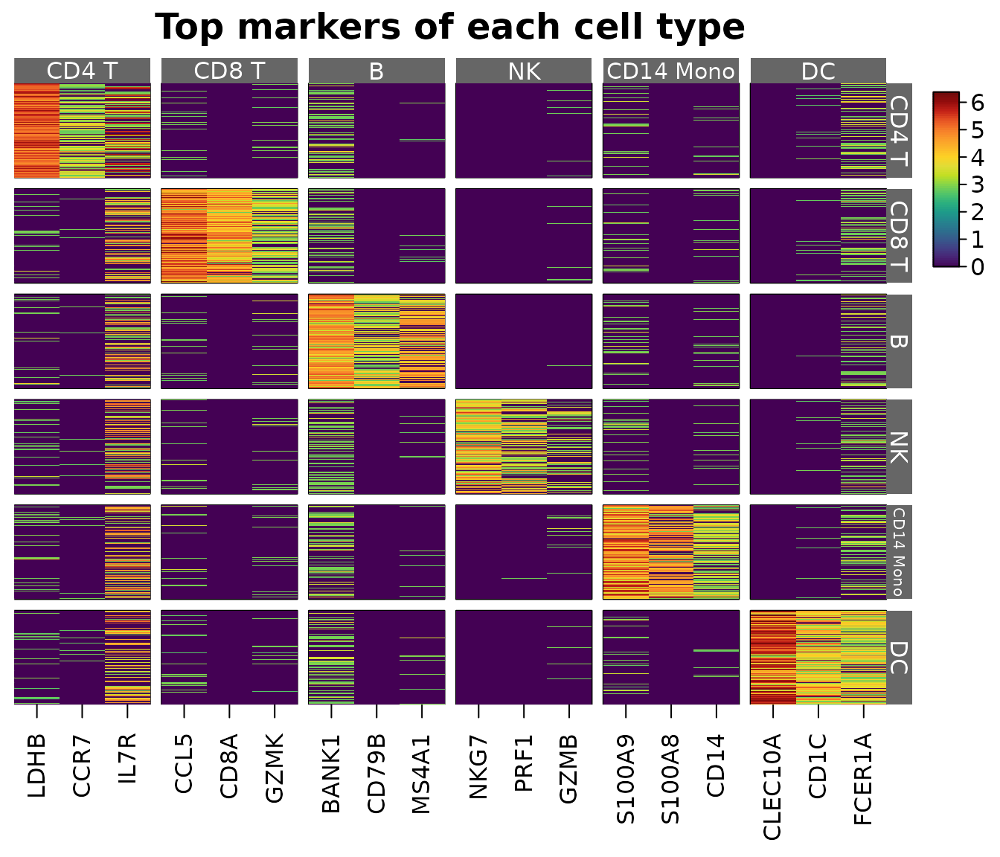
Dot plots
heat_map_dot() draws one row per group and one column
per feature: the colour of each dot is the group’s mean scaled within
the feature (z-scores clipped at ±2.5, as Seurat’s
DotPlot() (Hao et al. 2024), by default;
scale = "range" for scanpy’s 0 to 1 (Wolf, Angerer and
Theis 2018)), and its area the proportion of the group’s cells in which
the feature is detected, with a size legend in percent.
heat_map_dot(sce, features = m, group_by = "cell_type", title = "Top markers")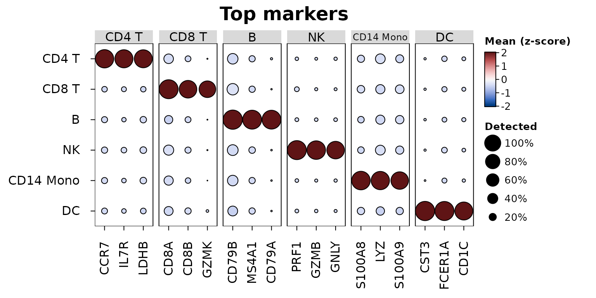
Every heat_map() setting can be added, e.g. a dendrogram
of the groups and scanpy’s scaling:
heat_map_dot(sce, features = m, group_by = "cell_type", scale = "range",
tree_y = TRUE, dot_min = 0.05, title = "Scaled 0 to 1")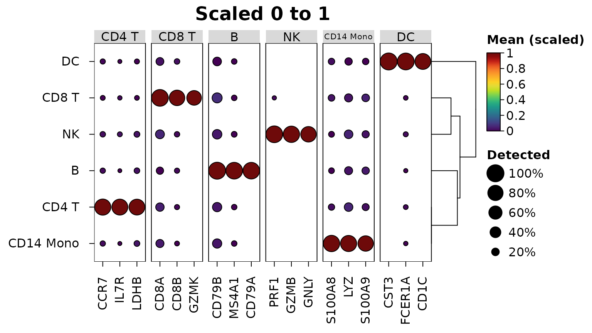
The markers themselves can be drawn as a dot plot:
heat_map_dot(m) colours each dot by the log fold change of
the gene in the group and sizes it by -log10 of the adjusted p-value (as
scanpy’s rank_genes_groups_dotplot()), with
marker_colour and marker_size for other
columns (e.g. "auc" or "detected_in"). A gene
has a dot in each group where it passed the filters of
heat_map_markers(); with min_detected = 0 and
min_logfc = -Inf every gene passes in every group, so the
dot plot also shows where each marker is lower than in the other
cells:
all_pairs <- heat_map_markers(sce, group_by = "cell_type", n = 3,
min_detected = 0, min_logfc = -Inf)
heat_map_dot(all_pairs, title = "Markers by fold change and p-value")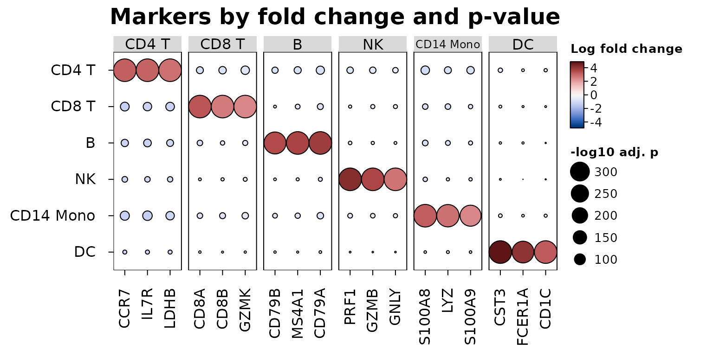
Groups within groups
Several columns in group_by group the cells by their
combinations, ordered by the first column and then the next within it. A
dot plot then has one row per combination, grouped by the first column
in labelled strips and labelled by the others, so conditions can be
compared within each cell type:
heat_map_dot(sce, features = m, group_by = c("cell_type", "condition"),
title = "Markers in each condition")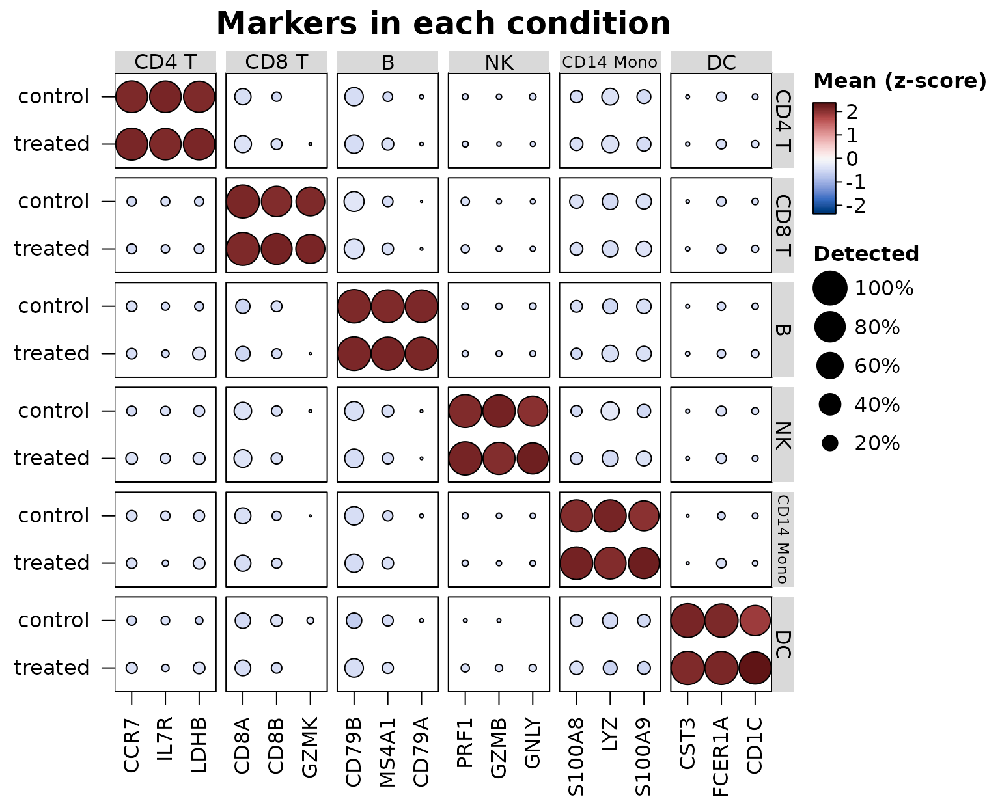
split_by shows two conditions in one row instead, each
dot split down the middle (see the cytometry example below).
heat_map() splits and labels the cells of each
combination (group_max then takes that many cells from
each), and heat_map_summarise() gives one row per
combination, e.g. a pseudobulk of the counts of each cell type in each
donor:
pseudobulk <- heat_map_summarise(sce, features = unlist(markers), assay = "counts",
group_by = c("cell_type", "sample"), fun = "sum")
dim(pseudobulk)
#> [1] 24 24
head(rownames(pseudobulk))
#> [1] "CD4 T / donor1" "CD4 T / donor2" "CD4 T / donor3" "CD4 T / donor4"
#> [5] "CD8 T / donor1" "CD8 T / donor2"Gene-set scores
heat_map_score() scores each cell for each of several
sets of genes, so a heatmap or dot plot can show a handful of pathways
or programs in place of hundreds of genes.
method = "zscore" (the default) averages the genes of a set
after z-scoring each across the cells, so a highly expressed gene
doesn’t outweigh the others; "mean" averages the values
themselves; and "module" subtracts the mean of control
genes of similar expression (the score of Tirosh et al. 2016, as
Seurat’s AddModuleScore() computes it): every gene is
binned by its mean expression and, for each gene of the set, 100 genes
of its bin are drawn as controls with a fixed seed, so a score above
zero means more expression than genes of that level usually have. The
scores are computed from the non-zero values of sparse data, and come
back as one column per set with the metadata of the cells, so they are
drawn and summarised like genes:
programs <- list(
T = c("CD3E", "IL7R", "CD8A", "CD8B"),
B = c("MS4A1", "CD79A", "CD79B", "BANK1"),
Myeloid = c("LYZ", "S100A8", "S100A9", "FCER1A", "CST3"),
NK = c("GNLY", "NKG7", "PRF1", "GZMB")
)
scores <- heat_map_score(sce, programs, method = "module")
head(scores)
#> T B Myeloid NK
#> cell1 0.53752600 -1.2280584 -0.89457312 -0.5504025
#> cell2 -1.23145835 -1.2187556 1.05666537 0.2443310
#> cell3 1.07676934 0.2613228 -0.53361971 -0.2821408
#> cell4 -0.56509943 -0.5460668 0.09644342 2.3956009
#> cell5 0.05907123 1.1074705 -0.50459187 -0.5757233
#> cell6 -0.43638977 -0.4035027 0.31067944 3.1705679
heat_map_dot(scores, group_by = "cell_type", title = "Module scores")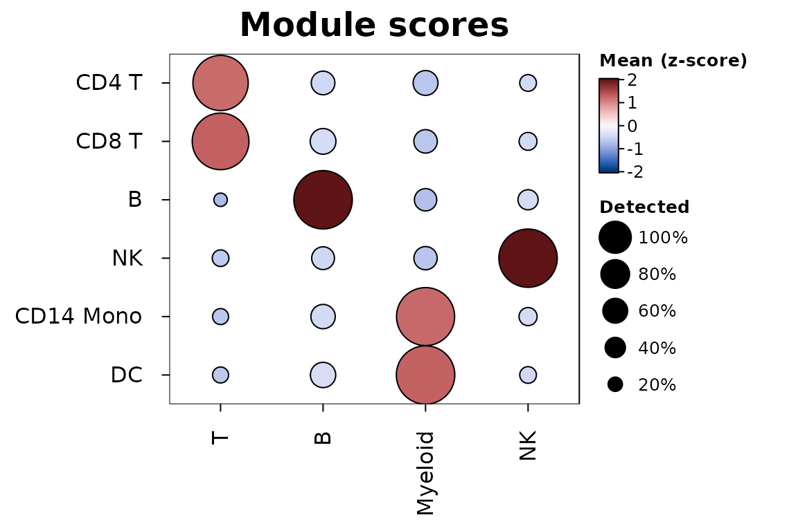
In the dot plot the size of each dot is the share of the group’s
cells scoring above zero (threshold). The markers of
heat_map_markers() give one set per group
(heat_map_score(sce, m)), and sets naming genes that aren’t
in the data are scored on the genes that are, with a message.
Aligned data sets
heat_map_align() draws data sets measured on the same
cells or groups side by side - genes and surface proteins (ADT) of
CITE-seq, expression and chromatin accessibility, or genes and scores -
as blocks of one heatmap. The rows are matched by name and put in one
order, clustered (tree = TRUE) or split by k-means
(tree_kmeans) on the main data set alone; each
block is scaled on its own and has its own colour scale and legend, so
values in different units never share a scale. The mean marker genes of
each cell type beside their module scores, the genes z-scored within
each gene and the scores on a diverging scale centred at zero:
program_means <- heat_map_summarise(scores, group_by = "cell_type")
heat_map_align(
list(Genes = means, Programs = program_means),
scale = list("column", NULL),
cell_col_scale = list(NULL, "Blue-Red 3"),
cell_col_scale_center = list(NULL, 0),
tree = TRUE,
title = "Marker genes and module scores of each cell type"
)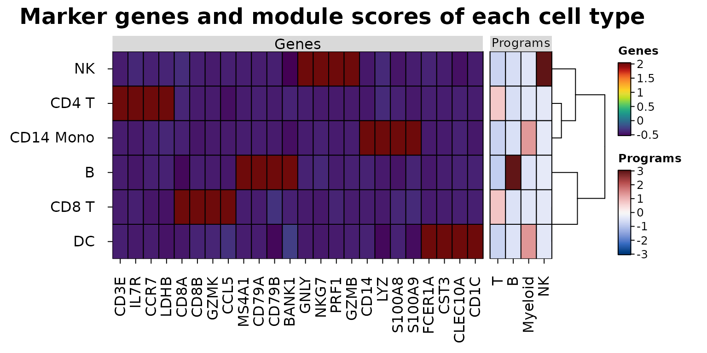
With axis = "y" data sets that share their columns
(e.g. genes and proteins as rows, groups as columns) are stacked as
blocks of rows. heat_map(cell_col_blocks_x = ) gives any
heatmap blocks of columns on their own colour scales.
Cytometry
Cytometry data arrive with events as rows and markers as columns. A
matrix or data frame works as it is, with group_by and
annotation_by naming its columns (which are then left out
of the features); flowFrame and flowSet
objects are read directly, without flowCore, with markers named by their
description (e.g. "CD3") or channel ("FL1-A"),
and a flowSet’s samples and phenotype data as metadata:
heat_map_summarise(fs, features = c("CD3", "CD4", "CD8"), group_by = "cluster",
fun = "median")
heat_map(fs, features = c("CD3", "CD4", "CD8"), group_by = "cluster",
group_max = 500, annotation_by = "sample")Mass cytometry intensities are usually transformed with asinh(x / 5)
(Bendall et al. 2011) (a cofactor of about 150 for flow cytometry) and
each marker then scaled from 0 to 1 between its 1st and 99th
percentiles, so that a few bright events don’t compress the colours of
all the others. heat_map_summarise() does both:
transform = "asinh" with cofactor, and
scale = "quantile" with q, applied to the
medians of the clusters (scale_when = "last", the default)
or to the events before summarising them ("first").
Below, heat_map_example("cytometry"): 200,000 simulated
events with 12 markers in eight clusters, from eight samples in two
conditions, as raw intensities. Cluster C3 is twice as common in the
stimulated samples, and HLA-DR rises in clusters C5 and C6 under
stimulation.
events <- heat_map_example("cytometry")
markers <- names(events)[1:12]
markers
#> [1] "CD3" "CD4" "CD8" "CD19" "CD20" "CD56" "CD16" "CD14"
#> [9] "CD11c" "HLA-DR" "CD45RA" "CCR7"
head(events, 3)
#> CD3 CD4 CD8 CD19 CD20 CD56 CD16
#> 1 65.84633 15.045075 0.0000 1697.35557 5.337933 2.091297 2.605279
#> 2 73.17048 4.164727 5341.6891 31.48333 10.311145 9.672986 6.615528
#> 3 26.56714 23.425620 153.8425 2.63540 7.046278 3.984819 9.395612
#> CD14 CD11c HLA-DR CD45RA CCR7 cluster sample condition
#> 1 11.41652 6.415408 5.551045 8.483152 2.123304 C3 S5 stimulated
#> 2 342075.87342 3.008363 53.019700 22.408138 7.718382 C1 S7 stimulated
#> 3 13.19786 2.474503 15.259158 2.179273 36.431362 C5 S6 stimulatedThe medians of each cluster, with stack_by counting the
events of each condition in each cluster. The summary keeps the number
of events in each cluster and in each part of it (its "n"
and "stack" attributes), which
bar_values_y = "n" draws as bars beside the clusters,
stacked by condition with bar_type_y = "stack"
("fill" draws the proportions instead):
medians <- heat_map_summarise(
events,
features = markers,
group_by = "cluster",
fun = "median",
transform = "asinh",
cofactor = 5,
scale = "quantile",
q = 0.01,
stack_by = "condition"
)
attr(medians, "stack")
#> control stimulated
#> C1 13367 12417
#> C2 13325 12482
#> C3 6719 12651
#> C4 13240 12229
#> C5 13313 12500
#> C6 13318 12655
#> C7 13369 12388
#> C8 13369 12658
#> attr(,"title")
#> [1] "condition"
heat_map(
medians,
tree = "both",
bar_values_y = "n",
bar_type_y = "stack",
bar_size_y = 1.6,
bar_fill_y = c(control = "grey60", stimulated = "#D7191C"),
legend_title = "Scaled median",
title = "Median of each cluster"
)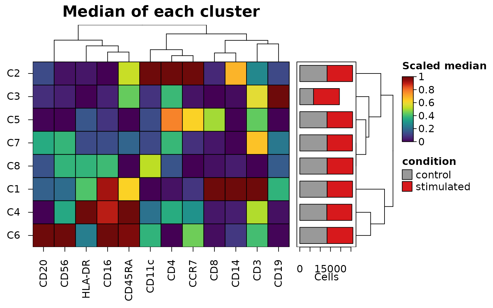
The distribution behind each median can be drawn inside its cell, here from 2,000 events of each cluster:
sub <- events[heat_map_downsample(events$cluster, 2000), ]
heat_map(
heat_map_summarise(sub, features = markers, group_by = "cluster",
fun = "median", transform = "asinh"),
scale = "column",
cell_values = heat_map_summarise(sub, features = markers, group_by = "cluster",
fun = "values", transform = "asinh"),
tree = "both",
title = "Distributions behind the medians"
)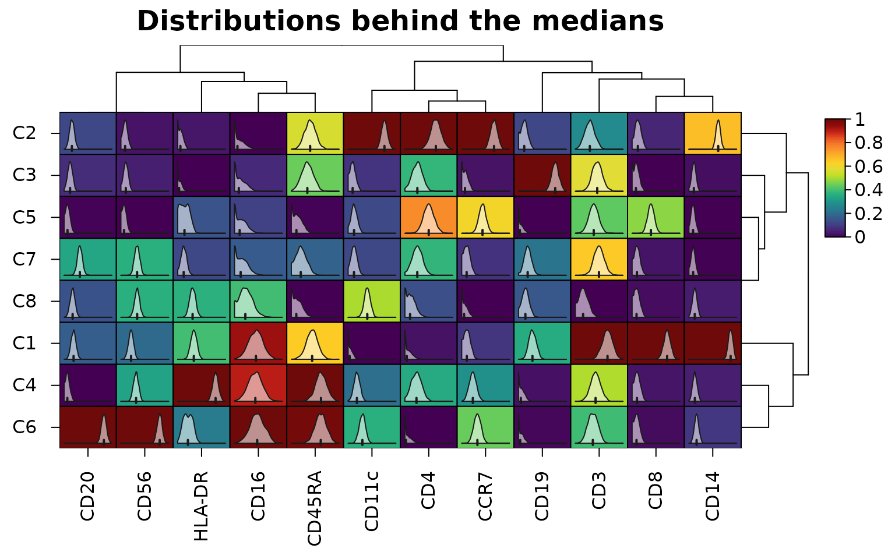
Grouping by cluster and sample
(group_by = c("cluster", "sample")) gives the median of
each cluster in each sample, the view of differential states. The
summary keeps the metadata that is the same for every event of each row,
here the sample and its condition (its "groups" attribute),
so that heat_map() can group and annotate its rows by
them:
states <- heat_map_summarise(
events,
features = c("HLA-DR", "CD45RA", "CCR7"),
group_by = c("cluster", "sample"),
fun = "median",
transform = "asinh",
scale = "quantile"
)
head(attr(states, "groups"))
#> cluster sample condition
#> C1 / S1 C1 S1 control
#> C1 / S2 C1 S2 control
#> C1 / S3 C1 S3 control
#> C1 / S4 C1 S4 control
#> C1 / S5 C1 S5 stimulated
#> C1 / S6 C1 S6 stimulated
heat_map(
states,
group_by = "cluster",
annotation_by = c("sample", "condition"),
axis_text_y = NA,
bar_values_y = "n",
bar_size_y = 1.6,
legend_title = "Scaled median",
title = "Median of each cluster in each sample"
)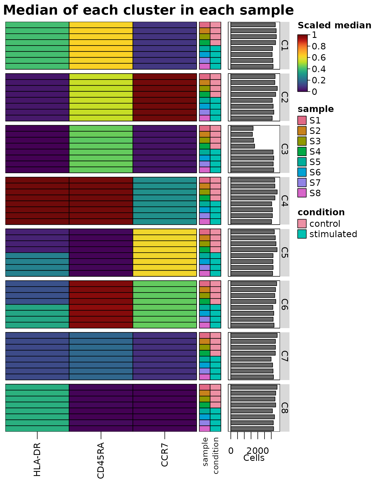
A dot plot split by condition compares the conditions in each dot:
with split_by = "condition", the left half of each dot
shows the control events of the cluster and the right half the
stimulated, each half coloured by its mean of the asinh-transformed
intensities (transform = "asinh", z-scored within each
marker across the clusters and both conditions) and sized by the
proportion of its events above threshold, here asinh 2 as
positive:
heat_map_dot(events, features = markers, group_by = "cluster",
split_by = "condition", transform = "asinh", threshold = 2,
title = "Control (left) and stimulated (right)")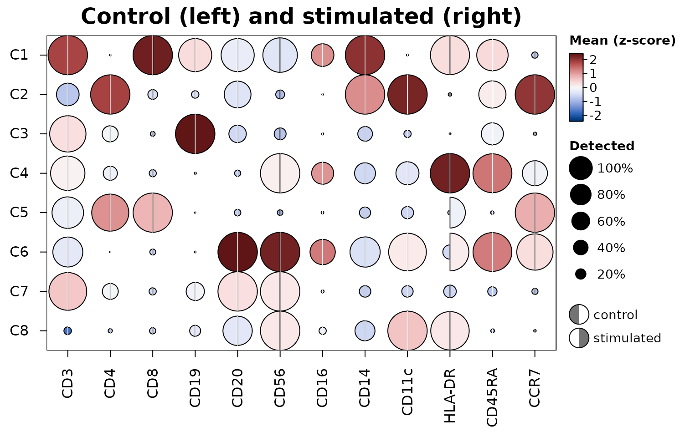
Differences between conditions within each cluster are tested by
heat_map_contrast(), with the samples as the replicates:
the events of each cluster in each sample are summarised by their mean
(here of the asinh-transformed intensities), and the four stimulated
samples are compared with the four controls by moderated t-tests (Smyth
2004), feature by feature in each cluster. Tests of single events or
cells find tiny differences significant once there are enough of them,
while only differences that hold from one sample to the next are real
(Squair et al. 2021). The heatmap shows the log fold change of each
marker in each cluster, with stars for adjusted p-values below 0.05,
0.01 and 0.001; draw = FALSE returns the table of tests
(for RNA, values = "logcpm" tests the summed counts of each
sample as limma-voom and edgeR pseudobulk analyses do):
contrast <- heat_map_contrast(
events,
group_by = "cluster",
condition_by = "condition",
sample_by = "sample",
features = c("CD3", "CD4", "CD8", "CD19", "CD14", "HLA-DR", "CD45RA"),
transform = "asinh"
)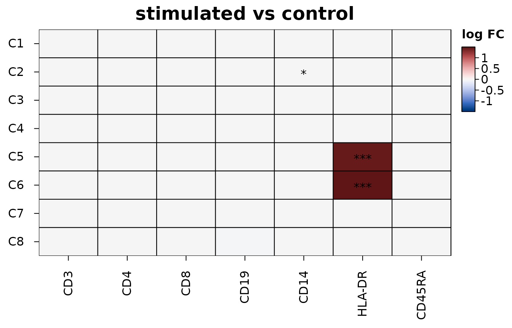
head(attr(contrast, "contrast")[order(attr(contrast, "contrast")$p_value), ], 3)
#> Differences of stimulated from control in 8 groups (pseudobulk moderated t-tests across samples); 3 of 3 with an adjusted p-value below 0.05.
#>
#> group feature logfc t p_value p_adj mean_test mean_reference
#> C5 HLA-DR 1.4591 218.52 8.11e-66 5.68e-65 2.17 0.707
#> C6 HLA-DR 1.4996 271.96 1.92e-32 1.34e-31 2.84 1.340
#> C2 CD14 -0.0133 -3.35 6.30e-03 4.41e-02 8.15 8.160
#> samples_test samples_reference cells
#> 4 4 25813
#> 4 4 25973
#> 4 4 25807Clusters that may be two populations
A cluster can combine two populations that clustering didn’t
separate, differing in one or two features. bimodal = TRUE
outlines the cells of a summary or dot plot in which a group’s cells
look like two populations, so that such clusters can be looked into.
Each outline comes from the dip statistic of Hartigan and Hartigan
(1985), the distance between the distribution of a feature’s values in
the group and the closest distribution with one peak. The dip is 0 for
one peak of any shape, about 0.02 for two equal populations 3 standard
deviations apart and 0.05 for 4. A cell is outlined when its dip is at
least 0.01 and above the dip that one population of as many cells
exceeds 1% of the time (0.06 for 100 cells, 0.02 for 1,000), so that
small groups aren’t outlined by chance.
Peaks can come from the measurement and its transformation rather
than from cells: piles of zeros, the two mirrored peaks the asinh
transform with too small a cofactor makes of a negative population, the
comb of 1, 2, 3, … counts on a log scale, saturated detectors. So the
dips are found from the values above threshold (the cells
in which a feature is detected, which dot sizes already show), after the
transform and before scaling, with discrete values spread over the gaps
between them and the piles at the ends of continuous values left out. On
simulated data none of these was outlined, while two populations 3
standard deviations apart were in groups of 5,000 cells.
Below, clusters C1 and C2 of the cytometry events are joined, as a clustering at lower resolution might join them. The markers that separate them are outlined in the joined cluster, and the bars show the largest dip of each cluster:
joined <- events
joined$cluster[joined$cluster %in% c("C1", "C2")] <- "C1+C2"
medians <- heat_map_summarise(joined, features = markers, group_by = "cluster",
fun = "median", transform = "asinh",
scale = "quantile", bimodal = TRUE)
sub <- joined[heat_map_downsample(joined$cluster, 2000), ]
heat_map(
medians,
bimodal = TRUE,
cell_values = heat_map_summarise(sub, features = markers,
group_by = "cluster", fun = "values",
transform = "asinh"),
bar_values_y = "dip",
legend_title = "Scaled median",
title = "C1 and C2 joined"
)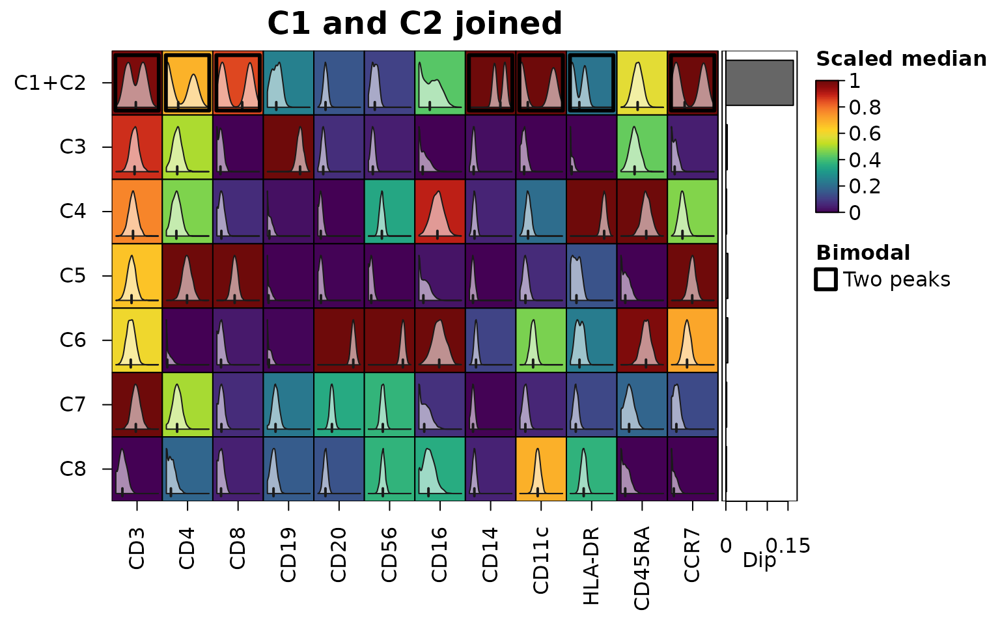
round(attr(medians, "dip")["C1+C2", ], 3)
#> CD3 CD4 CD8 CD19 CD20 CD56 CD16 CD14 CD11c HLA-DR CD45RA
#> 0.034 0.085 0.136 0.002 0.001 0.003 0.007 0.087 0.145 0.068 0.001
#> CCR7
#> 0.124Populations that differ in whether features are detected at all, such as CD4 and CD8 T cells in one cluster, each without the other’s markers, don’t give any single feature two peaks: on the count scale a feature detected in only some of the cells falls away steadily from zero, as dropout does. They are found across features instead, from the dip of the cells’ scores on the first principal component of the correlations of the features shown within the cluster, when that component carries real co-variation (an eigenvalue above the upper edge of the Marchenko-Pastur law for independent features; Marchenko and Pastur 1967), so that features with two peaks of their own don’t add up to a split, and the features that drive it are outlined. Here the CD4 and CD8 T cells of the blood cells are one cluster:
cells <- as.data.frame(colData(sce))
cells$group <- as.character(cells$cell_type)
cells$group[cells$group %in% c("CD4 T", "CD8 T")] <- "T cells"
hm <- heat_map_dot(sce, features = metadata(sce)$markers, group_by = cells$group,
bimodal = TRUE, title = "CD4 and CD8 T cells joined")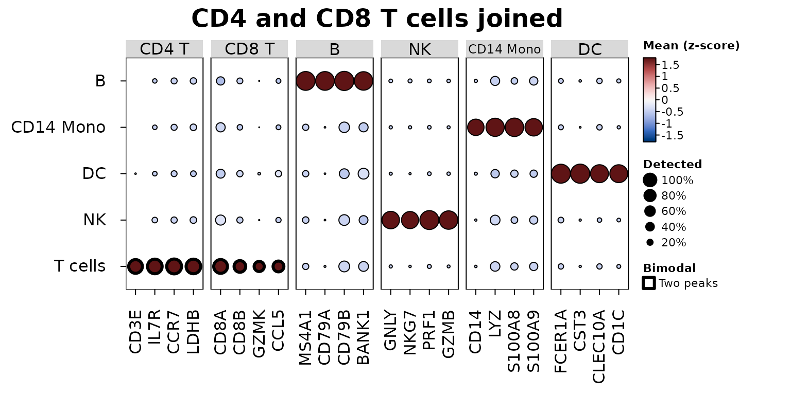
heat_map_describe() names what is outlined, and
heat_map_info(hm)$bimodal returns the dips:
heat_map_describe(hm)
#> Heatmap titled "CD4 and CD8 T cells joined" of 5 rows by 24 columns. Colours
#> show Mean (z-score), from dark blue (-1.79) through white to dark red (1.79).
#> Cell size shows a second set of values, from 0 to 1. The highest value is 1.79
#> (B, MS4A1) and the lowest is -0.638 (B, CD8A). The cells of T cells (dip
#> 0.0817, in CD3E, IL7R, CCR7, LDHB and 4 more) may combine populations that
#> differ in several features at once (the dip of their first principal
#> component); the features driving it are outlined. Columns are split into 6
#> groups, numbered from the left: CD4 T (4 columns, e.g. CD3E and IL7R) is
#> highest for T cells and NK and lowest for DC and B; CD8 T (4 columns, e.g. CD8A
#> and CD8B) is highest for T cells and DC and lowest for B and CD14 Mono; B (4
#> columns, e.g. MS4A1 and CD79A) is highest for B and DC and lowest for NK and
#> CD14 Mono; NK (4 columns, e.g. GNLY and NKG7) is highest for NK and B and
#> lowest for DC and T cells; CD14 Mono (4 columns, e.g. CD14 and LYZ) is highest
#> for CD14 Mono and T cells and lowest for DC and B; DC (4 columns, e.g. FCER1A
#> and CST3) is highest for DC and B and lowest for NK and CD14 Mono.An outline is a prompt to look, not a verdict: the distributions
inside the cells (cell_values) show what the dip has found,
and two states of one population (e.g. stimulated and resting cells) are
two peaks too.
Trajectories
Along a trajectory, genes are smoothed along pseudotime and ordered
by when they peak. heat_map_smooth() bins the cells along
along (a pseudotime column, or a vector), with
bins bins of equal numbers of cells
(binning = "width" for equal widths), and finds each gene’s
mean over the span bins around each bin. The result has one
row per bin and keeps the position of each bin, which
annotation_by draws as a track;
tree_order_y = "peak" (with the genes as rows) orders the
genes by where they are highest.
Below, heat_map_example("trajectory"): 4,000 simulated
cells of a branching trajectory, with a pseudotime for each of two
lineages as slingshot (Street et al. 2018) gives them (missing for cells
outside the lineage). Both lineages share their start and branch at a
pseudotime of 0.4, and 30 genes, in a random order, each peak at their
own point, some in one lineage only.
traj <- heat_map_example("trajectory", class = "SingleCellExperiment")
traj
#> class: SingleCellExperiment
#> dim: 30 4000
#> metadata(0):
#> assays(2): counts logcounts
#> rownames(30): gene1 gene2 ... gene29 gene30
#> rowData names(0):
#> colnames(4000): cell1 cell2 ... cell3999 cell4000
#> colData names(3): pseudotime lineage1 lineage2
#> reducedDimNames(0):
#> mainExpName: NULL
#> altExpNames(0):
head(colData(traj))
#> DataFrame with 6 rows and 3 columns
#> pseudotime lineage1 lineage2
#> <numeric> <numeric> <numeric>
#> cell1 0.5858003 0.5858003 NA
#> cell2 0.0089458 0.0089458 0.0089458
#> cell3 0.2937396 0.2937396 0.2937396
#> cell4 0.2773750 0.2773750 0.2773750
#> cell5 0.8135742 0.8135742 NA
#> cell6 0.2604278 0.2604278 0.2604278The genes along the pseudotime of all the cells, ordered by when they peak:
smooth <- heat_map_smooth(traj, along = "pseudotime", bins = 60)
heat_map(
smooth,
swap_axes = TRUE,
scale = "row",
tree_order_y = "peak",
annotation_by = "pseudotime",
axis_text_x = NA,
title = "Genes along pseudotime"
)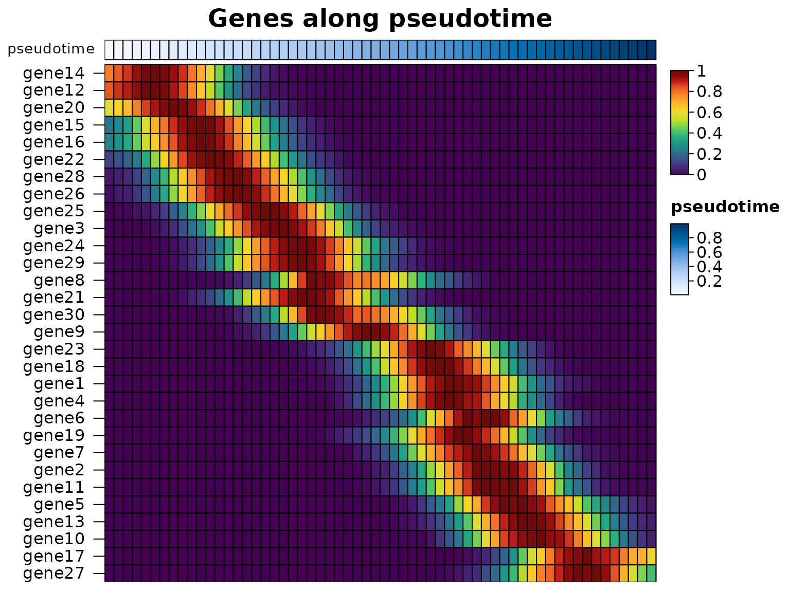
Several along columns smooth each lineage on its own
(group_by does the same for one pseudotime and a lineage
column), and group_by = "lineage" draws the lineages side
by side. The peak order reads the position of each bin along the
trajectory, so the genes of both lineages are ordered by when they
peak:
lineages <- heat_map_smooth(traj, along = c("lineage1", "lineage2"), bins = 40)
head(attr(lineages, "groups"))
#> lineage along
#> lineage1 / 1 lineage1 0.008310645
#> lineage1 / 2 lineage1 0.024960306
#> lineage1 / 3 lineage1 0.040551580
#> lineage1 / 4 lineage1 0.057537736
#> lineage1 / 5 lineage1 0.073592707
#> lineage1 / 6 lineage1 0.091877595
heat_map(
lineages,
swap_axes = TRUE,
group_by = "lineage",
scale = "row",
tree_order_y = "peak",
annotation_by = "along",
axis_text_x = NA,
title = "Two lineages"
)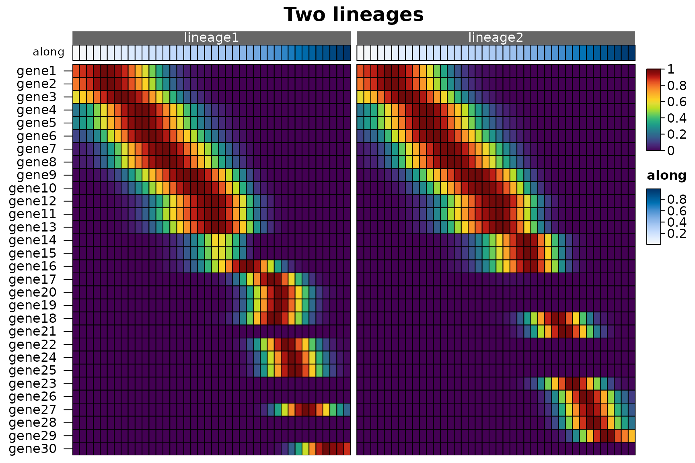
Without a pseudotime, tree_order_y = "spectral" orders
the cells themselves along a trajectory; see the ordering guide.
Speed
The single-cell functions were timed against their counterparts in Seurat 5.0.1, scran 1.30.2 and scuttle 1.12.0 on simulated counts of 12 cell types (10 marker genes each, about 10% of the other genes’ values non-zero), log-normalised and held as sparse matrices with genes as rows, as each package stores them. Each case ran in a fresh R process on the machine of the speed comparison (2 cores, 7.8 GB), three times when it took less than 30 seconds, and the median is shown; runs were stopped after 10 minutes. Memory is the growth of the process’s resident memory during the run, with the data already loaded.
In short:
-
Markers.
heat_map_markers()ranked the markers of 12 groups in 20,000 cells and 20,000 genes in 0.37 seconds, where scran took 19 to 22 seconds and Seurat 72 seconds and 4 GB. Like Seurat, HeatmapR scores only the features that pass its filters, one group against the rest; scran’s functions compute statistics for every gene between every pair of groups, which takes longer and tells you more. -
Summaries. scuttle’s
summarizeAssayByGroup()was the fastest at the mean and proportion detected of every gene, 2.4 to 2.6 times as fast asheat_map_summarise()(which makes one pass for each), and Seurat’sAverageExpression()took 2.8 to 9.6 times as long as HeatmapR, with up to 0.9 GB of memory. For a heatmap or dot plot only the chosen features are summarised. -
Plots. A dot plot of 40 genes in 100,000 cells took
0.17 seconds against 1.9 for Seurat’s
DotPlot(), and a heatmap of the 40 genes in every one of the 100,000 cells 1.3 seconds against 40 seconds and 2.8 GB forDoHeatmap().
Markers of every group against the other cells:
heat_map_markers(sce, group_by = "group"), scran’s
scoreMarkers() (AUCs and other effect sizes between every
pair of groups) and
findMarkers(test.type = "wilcox", direction = "up")
(Wilcoxon tests between every pair of groups), and Seurat’s
FindAllMarkers(only.pos = TRUE, min.pct = 0.1, logfc.threshold = 0.25)
(one-vs-rest Wilcoxon tests, without the presto package, which Seurat
uses to speed them up when it is installed). Times in seconds:
| HeatmapR | scran (scoreMarkers) | scran | Seurat | |
|---|---|---|---|---|
| 5,000 cells x 2,000 genes | 0.05 | 1.19 | 1.68 | 5.62 |
| 20,000 cells x 2,000 genes | 0.07 | 2.34 | 2.83 | 12 |
| 50,000 cells x 2,000 genes | 0.14 | 4.49 | 4.67 | 23 |
| 20,000 cells x 20,000 genes | 0.37 | 19 | 22 | 72 |
Peak memory in MB:
| HeatmapR | scran (scoreMarkers) | scran | Seurat | |
|---|---|---|---|---|
| 5,000 cells x 2,000 genes | < 1 | 47 | 64 | 151 |
| 20,000 cells x 2,000 genes | < 1 | 71 | 66 | 428 |
| 50,000 cells x 2,000 genes | 8 | 79 | 68 | 1,078 |
| 20,000 cells x 20,000 genes | 47 | 559 | 558 | 4,000 |
Mean and proportion detected of every gene in every
group (pseudobulk): heat_map_summarise() (twice,
once for each), scuttle’s
summarizeAssayByGroup(statistics = c("mean", "prop.detected"))
and Seurat’s AverageExpression(). Times in seconds:
| HeatmapR | scuttle | Seurat | |
|---|---|---|---|
| 20,000 cells x 2,000 genes | 0.09 | 0.03 | 0.23 |
| 100,000 cells x 2,000 genes | 0.23 | 0.09 | 2.20 |
| 20,000 cells x 20,000 genes | 0.54 | 0.23 | 2.77 |
A dot plot of 40 genes (heat_map_dot()
and Seurat’s DotPlot()) and a heatmap of 40 genes
in every cell, grouped (heat_map(swap_axes = TRUE)
and Seurat’s DoHeatmap()), drawn to a PNG file. Times in
seconds:
| HeatmapR | Seurat | |
|---|---|---|
| 20,000 cells x 2,000 genes | 0.11 | 0.60 |
| 100,000 cells x 2,000 genes | 0.17 | 1.95 |
| HeatmapR | Seurat | |
|---|---|---|
| 20,000 cells x 2,000 genes | 0.83 | 10 |
| 100,000 cells x 2,000 genes | 1.29 | 40 |
Peak memory of the heatmaps in MB:
| HeatmapR | Seurat | |
|---|---|---|
| 20,000 cells x 2,000 genes | 150 | 681 |
| 100,000 cells x 2,000 genes | 365 | 2,813 |
The scripts are in data-raw/benchmarks:
single-cell-case.R runs one case and
single-cell-run.R runs them all and writes
vignettes/articles/single-cell-benchmarks.csv, which this
page reads.
References
Aitchison, J. (1982). The statistical analysis of compositional data. Journal of the Royal Statistical Society: Series B, 44(2), 139-160. doi:10.1111/j.2517-6161.1982.tb01195.x
Bendall, S. C. et al. (2011). Single-cell mass cytometry of differential immune and drug responses across a human hematopoietic continuum. Science, 332(6030), 687-696. doi:10.1126/science.1198704
Benjamini, Y. and Hochberg, Y. (1995). Controlling the false discovery rate: a practical and powerful approach to multiple testing. Journal of the Royal Statistical Society: Series B, 57(1), 289-300. doi:10.1111/j.2517-6161.1995.tb02031.x
Hao, Y. et al. (2024). Dictionary learning for integrative, multimodal and scalable single-cell analysis. Nature Biotechnology, 42(2), 293-304. doi:10.1038/s41587-023-01767-y
Hartigan, J. A. and Hartigan, P. M. (1985). The dip test of unimodality. The Annals of Statistics, 13(1), 70-84. doi:10.1214/aos/1176346577
Korsunsky, I., Nathan, A., Millard, N. and Raychaudhuri, S. (2019). Presto scales Wilcoxon and auROC analyses to millions of observations. bioRxiv. doi:10.1101/653253
Mann, H. B. and Whitney, D. R. (1947). On a test of whether one of two random variables is stochastically larger than the other. The Annals of Mathematical Statistics, 18(1), 50-60. doi:10.1214/aoms/1177730491
Marchenko, V. A. and Pastur, L. A. (1967). Distribution of eigenvalues for some sets of random matrices. Mathematics of the USSR-Sbornik, 1(4), 457-483. doi:10.1070/SM1967v001n04ABEH001994
Smyth, G. K. (2004). Linear models and empirical Bayes methods for assessing differential expression in microarray experiments. Statistical Applications in Genetics and Molecular Biology, 3(1), Article 3. doi:10.2202/1544-6115.1027
Squair, J. W. et al. (2021). Confronting false discoveries in single-cell differential expression. Nature Communications, 12, 5692. doi:10.1038/s41467-021-25960-2
Street, K. et al. (2018). Slingshot: cell lineage and pseudotime inference for single-cell transcriptomics. BMC Genomics, 19, 477. doi:10.1186/s12864-018-4772-0
Tirosh, I. et al. (2016). Dissecting the multicellular ecosystem of metastatic melanoma by single-cell RNA-seq. Science, 352(6282), 189-196. doi:10.1126/science.aad0501
Wilcoxon, F. (1945). Individual comparisons by ranking methods. Biometrics Bulletin, 1(6), 80-83. doi:10.2307/3001968
Wolf, F. A., Angerer, P. and Theis, F. J. (2018). SCANPY: large-scale single-cell gene expression data analysis. Genome Biology, 19, 15. doi:10.1186/s13059-017-1382-0